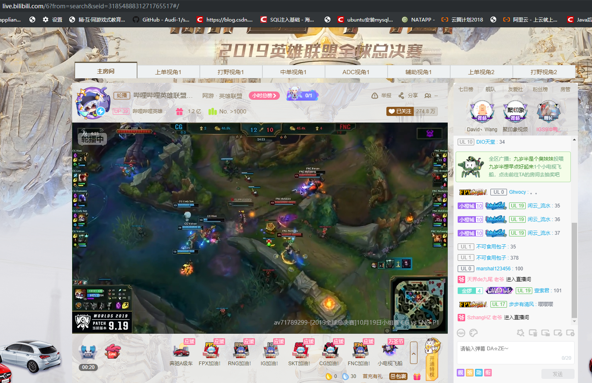
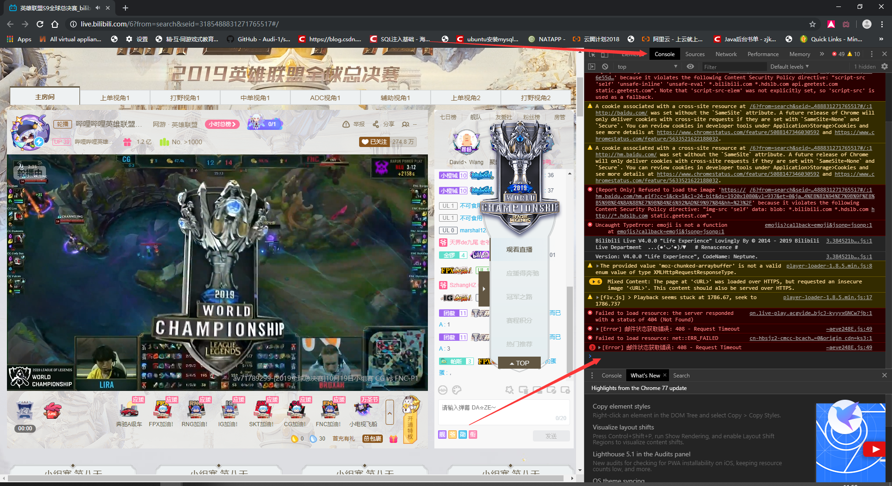
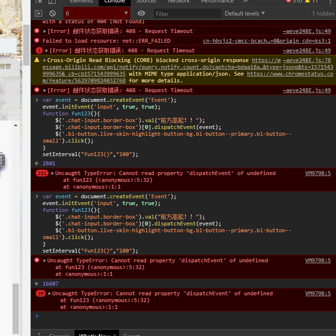

原文连接:https://www.cnblogs.com/godoforange/p/11707213.html
B站自动填弹幕（附带createEvent消息机制）
昨晚看的比赛真的要气死我。RNG 居然又输了。。。
为了LPL。。。我写了一个为LPL加油的脚本。希望大家能和我一起为LPL加油！
脚本代码如下：
var event = document.createEvent('Event');
event.initEvent('input', true, true);
function fun123(){
$('.chat-input.border-box').val("前方高能！！");
$('.chat-input.border-box')[0].dispatchEvent(event);
$('.bl-button.live-skin-highlight-button-bg.bl-button--primary.bl-button--small').click();
}
setInterval("fun123()","100");第一步打开浏览器并登录B站

按F12将控制台打开

将代码粘贴进去然后按回车

请大家观赏效果

往下就是其他原理了，非技术人员请离开
***
经过我多次调试，发现B站的textarea需要触发一个keydown事件之后才能发送。
所以我查阅了w3c文档，总结如下：
createEvent使用的许多方法, 如 initCustomEvent, 都被废弃了. 请使用 event constructors 来替代.
创建一个指定类型的事件。其返回的对象必须先初始化并可以被传递给 element.dispatchEvent。
语法
var event = document.createEvent(type);event 就是被创建的 Event 对象.
type 是一个字符串，表示要创建的事件类型。事件类型可能包括"UIEvents", "MouseEvents", "MutationEvents", 或者 "HTMLEvents"。请查看 Notes 章节获取详细信息 。
示例
// 创建事件
var event = document.createEvent('Event');
// 定义事件名为'build'.
event.initEvent('build', true, true);
// 监听事件
elem.addEventListener('build', function (e) {
// e.target matches elem
}, false);
// 触发对象可以是任何元素或其他事件目标
elem.dispatchEvent(event);创建自定义事件
Events 可以使用 Event 构造函数创建如下：
var event = new Event('build');
// Listen for the event.
elem.addEventListener('build', function (e) { ... }, false);
// Dispatch the event.
elem.dispatchEvent(event);绝大多数现代浏览器中都会支持这个构造函数（Internet Explorer 例外）。
添加自定义数据 – CustomEvent()
要向事件对象添加更多数据，可以使用 CustomEvent，detail 属性可用于传递自定义数据
CustomEvent 接口可以为 event 对象添加更多的数据。例如，event 可以创建如下：
var event = new CustomEvent('build', { 'detail': elem.dataset.time });下面的代码允许你在事件监听器中访问更多的数据：
function eventHandler(e) {
log('The time is: ' + e.detail);
}过时的方式
早期的创建事件的方法使用了受Java启发的API。下面展示了一个示例：
// Create the event.
var event = document.createEvent('Event');
// Define that the event name is 'build'.
event.initEvent('build', true, true);
// Listen for the event.
document.addEventListener('build', function (e) {
// e.target matches document from above
}, false);
// target can be any Element or other EventTarget.
document.dispatchEvent(event);事件冒泡
通常需要从子元素触发事件，并让祖先捕获它：
<form>
<textarea></textarea>
</form>const form = document.querySelector('form');
const textarea = document.querySelector('textarea');
// Create a new event, allow bubbling, and provide any data you want to pass to the "details" property
const eventAwesome = new CustomEvent('awesome', {
bubbles: true,
detail: { text: () => textarea.value }
});
// The form element listens for the custom "awesome" event and then consoles the output of the passed text() method
form.addEventListener('awesome', e => console.log(e.detail.text()));
// As the user types, the textarea inside the form dispatches/triggers the event to fire, and uses itself as the starting point
textarea.addEventListener('input', e => e.target.dispatchEvent(eventAwesome));动态创建和派发事件
元素可以侦听尚未创建的事件：
<form>
<textarea></textarea>
</form>const form = document.querySelector('form');
const textarea = document.querySelector('textarea');
form.addEventListener('awesome', e => console.log(e.detail.text()));
textarea.addEventListener('input', function() {
// Create and dispatch/trigger an event on the fly
// Note: Optionally, we've also leveraged the "function expression" (instead of the "arrow function expression") so "this" will represent the element
this.dispatchEvent(new CustomEvent('awesome', { bubbles: true, detail: { text: () => textarea.value } }))
});触发内置事件
下面的例子演示了一个在复选框上点击（click）的模拟（就是说在程序里生成一个click事件），这个模拟点击使用了DOM方法. 参见这个动态示例
`function simulateClick() { var event = new MouseEvent('click', { 'view': window, 'bubbles': true, 'cancelable': true }); var cb = document.getElementById('checkbox'); var cancelled = !cb.dispatchEvent(event); if (cancelled) { // A handler called preventDefault. alert("cancelled"); } else { // None of the handlers called preventDefault. alert("not cancelled"); } }